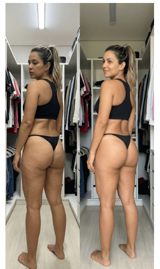
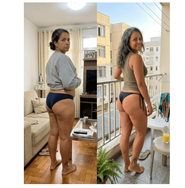
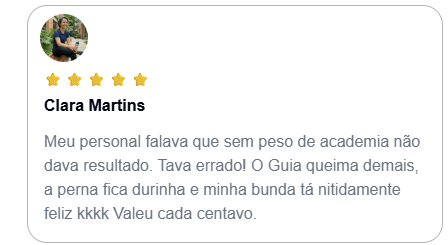

Enfoque claro
Trabajo centrado en piernas y glúteos con ejercicios sencillos.
Un método pensado para mujeres que quieren progresar con rutinas prácticas, desde casa y sin entrenamientos interminables.
Sí: un plan corto, claro y enfocado que te ayuda a salir del estancamiento y a sentirte mejor con tu cuerpo.
Plan práctico y enfocado para tu objetivo.

Conoce un camino práctico para entrenar piernas y glúteos desde casa, durante cuatro semanas.
Vídeo introductorio temporal. Puedes sustituirlo por el vídeo oficial de la presentadora sin cambiar esta página.
No se trata de acumular rutinas difíciles, sino de seguir un camino simple para empezar y mantener la constancia.
Por eso este método busca ser más ligero, más claro y mucho más fácil de cumplir.
Una propuesta que puedes adaptar a tus tiempos, sin presiones innecesarias.
Trabaja en tus objetivos con una rutina que puedas adaptar a tu día a día.
Trabajo centrado en piernas y glúteos con ejercicios sencillos.
Entrena en casa, sin depender de gimnasio ni de una logística complicada.
Sesiones cortas y una estructura clara que ayuda a empezar.
Estas imágenes son referencias de presentación. Los resultados personales pueden ser diferentes.

En lugar de improvisar cada día, sigues un camino ya estructurado para sostener la constancia y sentir que avanzas.
QUIERO MI PLANMensajes visuales de referencia. Publica testimonios únicamente con autorización y evidencia.

«Mi entrenador me decía que sin peso de gimnasio no habría resultado. Se equivocó. La guía es buenísima, la pierna queda durita y el glúteo se nota muchísimo mejor. Valió cada centavo.»
«Por fin encontré algo que no castiga mis rodillas y al mismo tiempo me hace sentir que sí estoy trabajando piernas y glúteos.»
«Había dejado de entrenar piernas por dolor y frustración. Esta guía me devolvió las ganas y la confianza para volver a verme bien.»
Conoce el contenido del programa y empieza a tu ritmo.
Un método digital creado para ayudarte a conseguir unas piernas más tonificadas y unos glúteos más firmes con una propuesta simple, atractiva y fácil de seguir.
Consulta las condiciones de la garantía directamente en el checkout antes de comprar.
Todo lo que necesitas saber para decidir si este método es para ti.
Sí. El objetivo es trabajar piernas y glúteos con una propuesta más cómoda y menos agresiva. No todo depende de hacer sentadillas pesadas.
Muchas personas sienten más activación, más firmeza y mejor conexión con el cuerpo dentro de las primeras semanas. Los cambios visibles dependen de cada caso y de la constancia.
La propuesta busca ser más amable con la rodilla, pero si tienes dolor persistente o una lesión concreta, lo mejor es consultar antes con un profesional de salud.
No. La idea central es que puedas empezar desde casa, con una rutina simple y práctica.
Al comprar por el checkout oficial, recibirás la información y el acceso indicados en la plataforma.
Consulta en el checkout las condiciones de devolución aplicables a tu compra.